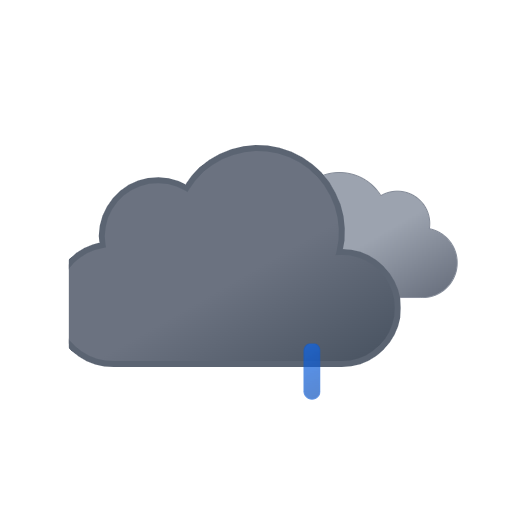
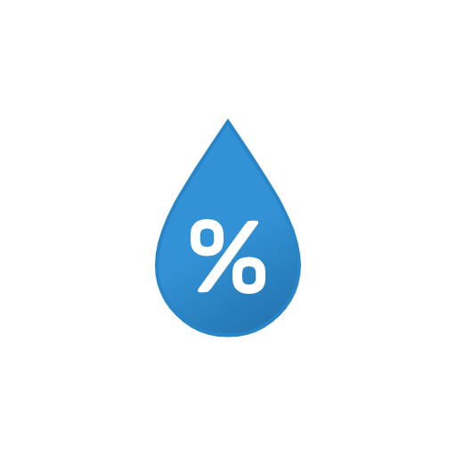
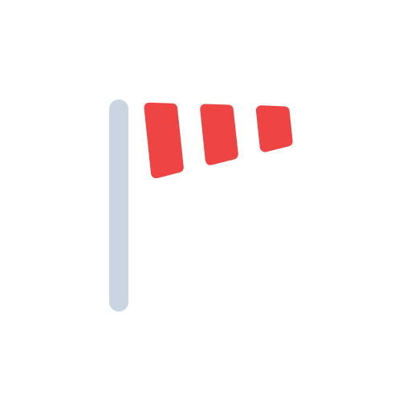
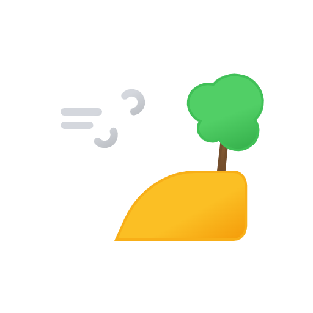

CAD, e‑PP, DSS และข้อมูลเชิงพื้นที่
⌁ เลือกมุมมอง ⌄
ข้อมูลหลักข้อมูลสนับสนุน
เปิดเต็มหน้าจอ ↗


กำลังโหลดปริมาณฝน
กำลังโหลดความชื้นสัมพัทธ์
กำลังโหลดทิศทางลม
กำลังโหลดความเร็วลมติดตามข้อมูลสำคัญเพื่อการเฝ้าระวัง วิเคราะห์ และสนับสนุนการตัดสินใจจากแผนที่กลางเดียวกัน
CAD, e‑PP, DSS และข้อมูลเชิงพื้นที่
โรงพยาบาล ดับเพลิง ตำรวจ ชุมชน CCTV และหัวจ่ายน้ำ
เปิด Hub ›ตำแหน่ง ประเภทเหตุ และแนวโน้มความเสี่ยง